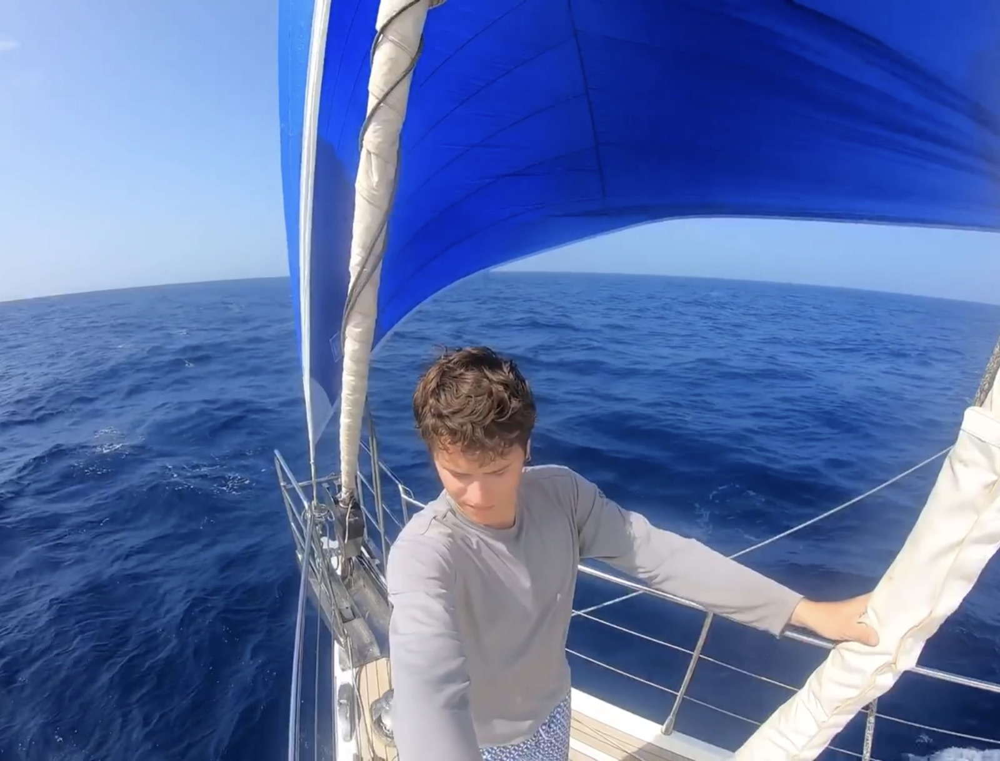
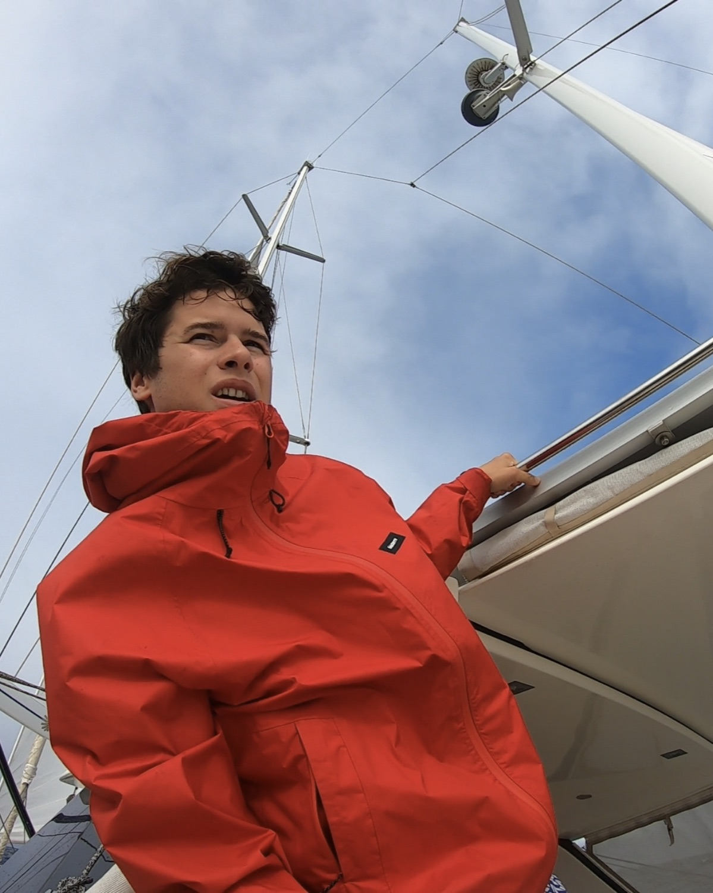

The Story
Some things you only learn by doing them — at the source, beside someone who's done it for years. This is why I built EducatedTraveler, and why it connects people instead of selling trips.
A machine can tell you how to do almost anything now. It cannot give you the hands that know.
Knowing is cheap. Doing — really doing it, with your body, beside a master, until the craft is yours — is the rare thing. The judgment you earned in open water. The roll that finally came out right because you understood the rice, not because you watched a video about it. No one can take that back.
No tutorial at 2 AM. No course you half-watch and never open again.
You go to the source — for a week or more — phone in a drawer, hands in the work, beside a handful of people chasing the same craft. You don't study it. You live it. And you come home with a skill in your hands and a band of people who were there. Earned, not bought.
How I know this works
I didn't design this on a whiteboard.
I lived it for fifteen years.
Some people learn in lecture halls. I learned on night watches in the Pacific, in kitchens where no one spoke my language, on trails where the map ended. Every skill I have was earned firsthand — and I built EducatedTraveler so others could find the same doors, without needing a decade to do it.
Chapter One
Sailing taught me everything the ocean could. Across Asia, Australia, the Atlantic, the Mediterranean, and the Pacific — I learned navigation not from textbooks, but from stars and swells and the hard lessons of open water.
Cooking started in France, under Michelin-starred chefs who demanded perfection. It became years as a superyacht chef, sourcing from Provençal markets to South Pacific fishermen — Galápagos anchorages, the quays of Brazil, the markets of Southeast Asia.
Every skill came firsthand — from bustling markets in Southeast Asia to remote anchorages where the only sound was the wind. This is what I mean by source before simulation: learn where the knowledge lives.

"The ocean doesn't care about your credentials. It only respects what you can actually do."
Places that shaped me
India highlighted — where the idea for EducatedTraveler took root.

"Every master I met was already teaching. I just needed to connect them to the people ready to learn."
Chapter Two
The roads introduced me to remarkable people. Photographers on Himalayan passes, teaching light to anyone who'd listen. Hikers on the Annapurna circuit who knew every medicinal plant. Potters in Vietnam who'd spent decades on a single glaze.
India kept calling me back. It was in the Thar desert, in Rajasthan, that the idea finally crystallized: these masters are everywhere, teaching their craft at its source. Why aren't more people learning from them?
Cooking aboard yachts, I'd meet guests who longed for something real but didn't know where to find it. Andean weavers, Balinese yogis, Himalayan guides — all willing to teach, all hidden in plain sight.
The mission became simple: connect the masters to the learners — and the learners to each other.
Link the people willing to teach
with the ones ready to learn —
at the source, not the simulation.
Chapter Three
So EducatedTraveler isn't a marketplace and it isn't a tour operator. It's a map and a circle: it points you to the masters and the places I'd trust with my own hands, and it gathers the people who want the same thing — so you arrive somewhere true, with people beside you.
No funnel. No upsell. You deal with the teachers directly; I just make sure they're real, the place is the source, and you're not walking in alone. Bonds form the way they formed for me on the roads — through shared challenge and full immersion.
From my path emerges yours. Not a copy — your own.
Three things no algorithm can hand you
Something your hands can do — proof you were there and did the thing, not just talked about it.
A handful of people who knew you at your most alive — and a circle that outlasts the trip, the way mine did.
Earned, human capability no machine can download — worth more the more the world automates.
Your place is out there.
I spent fifteen years finding these masters and these places. Every one of them taught me something — a week or a year, the good days and the hard ones. As machines make knowing cheap, going out and confronting the thing you actually want to learn is the rare thing — and you come home with the skill, the people, and a clearer sense of who you're becoming.
The Circle is where we find your people. The Atlas is where you pick your first door.
A place, a person, your people.
Skills last. Tans fade.